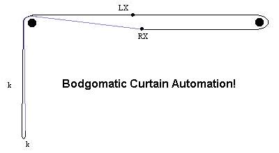

You need one piece of cord, any sort of cord that meets your approval, and more importantly your resident interior designer's aesthetic standards. In the UK, B&Q seem to have a good range of cords.
Measure the distance between the curtain pole supports (the bits that come out of the wall and have large holes in them for the pole to slide though). I'll call that 'A'
Measure the vertical distance from the top of the pole supports to where you want the bottom of the loop to hang. If you are going to have them automatic only, this can be very short so you can hide the opener behind the top of the curtains. I'll call that 'B'.
String length needs to be 2x(A+B) plus about 20-30cm for knots.
Connect it to the curtains as shown below

Black circles are the pole supports (the 2 cords on the left just sit
on the pole support together)
'X's are where you tie the cord to the rings that slide on the pole.
('LX' is where you tie it to the left curtain, 'RX' is to the right curtain.
It's best to tie on at the 2nd ring from the centre, so that when you pull
the cord the curtains meet properly in the middle, rather than the rings
meeting and the curtains having a slight gap. It also hides the ends
of the cord better. The two ends of the string can be tied together
neatly at either LX or RX. At the other 'X' you need to tie the cord
on 'en route', or make a loop in the cord afterwards and fix it to the
ring somehow. You'll see what I mean when you try it...)
'k' are points where you can tie small knots, if the curtains are going
to be manually controlled only. Open the curtains fully, tie a knot
at the bottom of the loop, close them fully, tie a knot at the (new) bottom
of the loop. Now, to either open or close the curtains, just find
the highest of the two knots and pull on it- useful to avoid pulling the
whole curtain
pole off the wall if you're not quite awake when trying to open them...
this might only be a problem for me though :-)
Basically, it uses the pole supports as pulleys, which will probably wear them out eventually, so you could put some tape, or extra varnish on top of them if that concerns you. I've had mine like this for about 6 months on a standard cheap wooden pole so far, and another one on plastic poles for about 3 years.
You need to make sure the pole is firmly fixed to the wall- opening curtains normally is a side-to-side force, so as long as the fixings support the weight of the curtains and pole, all will be well. But now you will be pulling down on the poles, so they need to support the curtains, poles, and whatever force you need to apply to open them.
There will be visible cords if you look carefully. I've not seen how 'real' cord operated curtains work (except one which had a hollow metal pole with the string inside, and a slot in the bottom face), it might be the same way, it might be better, it's probably not worse. If 'real' ones are worse, someone tell me, and I'll try to license my idea to Swish :-)
It could be used on curtain rails too, but you'd probably need to use screweyes or similar for the 'pulley' as the plastic blocks that fix curtains rails to the wall would probably end up snagging the cord.